專題介紹
找到最佳值，達到完美曲線
感謝技嘉提供我們這個題目。
此次題目讓我們學習甚多。
試圖找出最佳的pid值，控制風扇的轉動。
目標是用PID控制器，來控制伺服器內的風扇進而達到控溫、節能…等效果。
將設定CPU溫度為83度的高溫下，用PID控制風扇，伺服器跑一段時間的負載測試後，觀察以下測試項目:
I) CPU 平均誤差低
II) CPU 最高溫度低
III)風扇震盪小
IX) 風扇電源消耗改善率高
如果以一台伺服器，一天可以節省100Ｗ，一個月就也省3000W，一年就36KW。
一度2塊錢來算，一年一台72元，感覺沒有很多。以一個機房一個機櫃少說10台，100台機櫃，一年剩下72000元。
要如何有效地控制系統呢？那就有我們下來一一解說。
團隊介紹
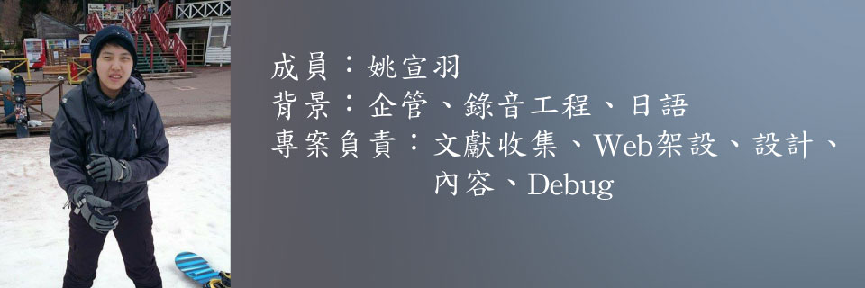
問題分析
什麼是PID?
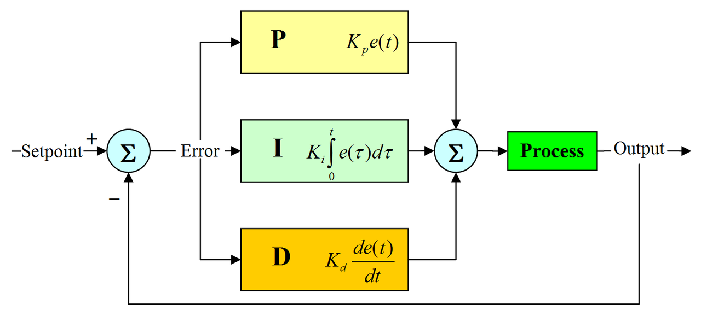
PID控制器，是由比例（Proportional)、積分（Integral）和微分（Derivative）組成。
依照Kp、Ki、Kd三個值特性，調整出適合系統的控制器。
現代工業中，PID控制應用中常見的反饋迴路部件。這個控制器把收集到的數據和一個參考值進行比較，
然後把這個差別用於計算新的輸入值，這個新的輸入值的目的是可以讓系統的數據達到或者保持在參考值。
PID控制器可以根據歷史數據和差別的出現率來調整輸入值，使系統更加準確而穩定。
PID控制器的比例(P)、積分(I)和微分(D)分別對應目前誤差(Err)、過去累計誤差及未來誤差。
當被控對象的結構和參數無法完全掌握，或得不到精確的數學模型時，其它控制理論的設計技術難以使用。故系統的控制器的結構和參數，就必須依靠經驗和現場調試來確定，
此時，最適合用PID控制技術進行設計。
藉由調整PID控制器的三個參數，可以調整控制系統，設法滿足設計需求。
結構簡單、穩定性好、工作可靠及調整方便，而成為工業控制一項可靠的技術工具。
控制器的響應可以用控制器對誤差的反應快慢、控制器過衝的程度及系統震盪的程度來表示。
不過使用PID控制器不一定保證可達到系統的最佳控制，也不保證系統穩定性。
有些應用只需要PID控制器的部份值，可以將不需要值的參數設為零即可。
因此PID控制器可以變成PI控制器、PD控制器、P控制器或I控制器。
其中又以PI控制器比較常用，因為D控制器對回授雜訊十分敏感，而若沒有I控制器的話，系統不會回到參考值，會存在一個誤差量。
Kp、Ki、Kd三個值到底要怎麼調整？
我們這邊有個小程式，可以供大家先自行操作看看。請點我
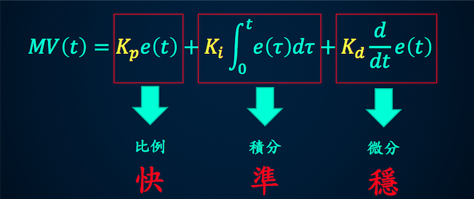
P值：比例（Proportional)為目標值跟Err值的比例。但隨著比例越來越小，發現它很難穩定在目標值上面。
I值：積分（Integral）為目標值跟Err值有落差，它將會做積分，達到目標值為止。但是控制上的不是太穩定，因此它也是常常延遲因素之一。
D值：微分（Derivative）為目標值跟Err值做微分，改善震盪。但是值過大(過衝)，或是外在因素，也可能導致它完全無法漸少震盪效果。
我們找尋多方資料，找尋不同的調參數方法。
經過我們多方比較，擷取我們想要的部分。以下是不同的調參數方法比較。
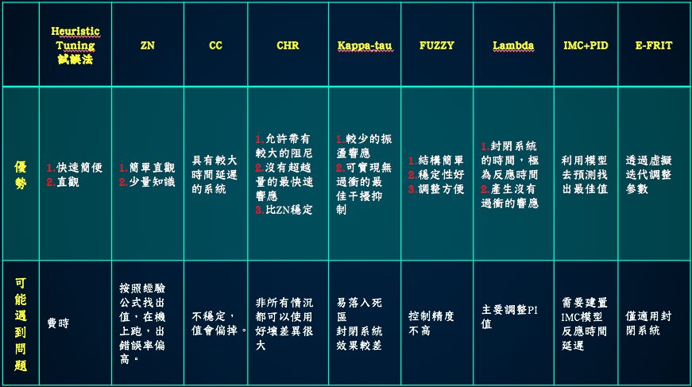
以下是提供，調參數的數值。
Heuristic Tuning�試誤法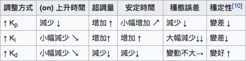
優點：快速、便捷。直接調整測試。
缺點：費時
Ziegler-Nichols（最為大家所知的）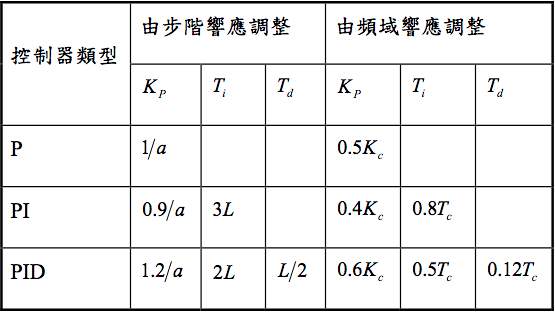
優點：簡單、直觀、需要少量的相關知識。
缺點：在封閉式迴路，最大超過25%將過衝，強烈震盪。因為是經驗推導，所以會有偏差，沒有辦法直接套用在所有狀況下。實機利用臨界感度危險。
CC（為ZN的改良版）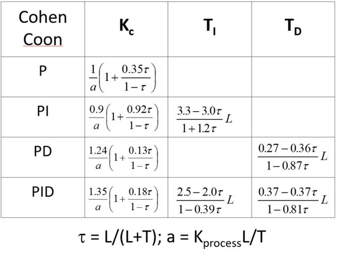
優點：擁有ZＮ的優點，並且適用於延遲較大的系統。
缺點：不穩定，容易整個值偏掉。
CHR（為ZN的改良版）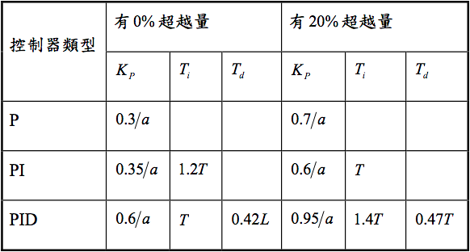
優點：允許帶有較大的阻尼、沒有超越量的最快速響應，並且設定帶有 %20 超越量的最快速響應。過衝小。
缺點：非所有情況都可以使用。
Kappa-tau（為ZN的改良版）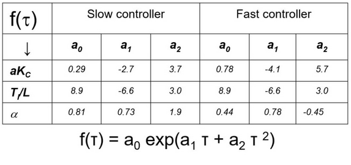
優點：較小的震盪、可實現無過衝最佳的壓抑干擾。
缺點：無法控制目標以及封閉系統。
Lambda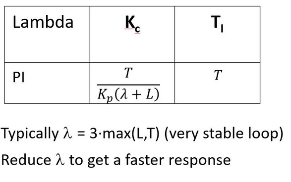
優點：在封閉系統中，選擇穩定值，可知道響應多塊的速度。
缺點：僅可以使用在PI值得調參上面。
PID回饋系統
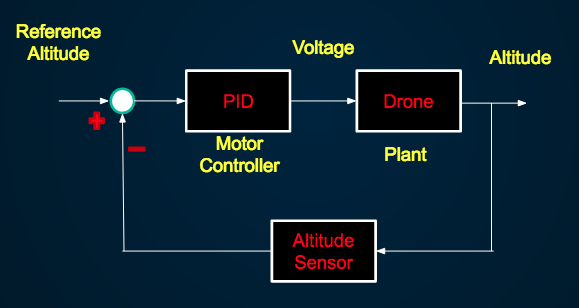
它是一個控制的系統，它也有開迴路系統，但我們是利用的閉迴路系統。差別在下面著個感測器這部分，可以感測去修正。
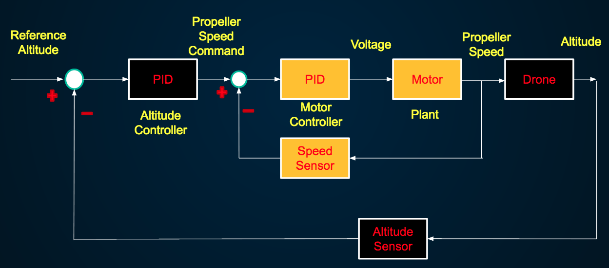
在我們瞭解上，技嘉這系統應該是雙迴路系統。內部迴路是控制pid風扇的轉速，回授回來的是cpu的溫度。
為什麼要選GA？
我們透過多方比較許多方法，需要將方法轉寫成程式碼。
所以我們必須要找到一個適合的演算法帶入。了解系統後，我們認為在時間有限的範圍內，
GA相對是可以達到找到最準確的值。由於我們的GA演算法是由我們自行撰寫，因此，它可以調控的相較其他的大。
可以配合需要的，取調整更適合的參數達到抓到適合得值。
主程式設計
GA是什麼？
要撰寫GA演算法前，我們需要知道GA是什麼？
基因演算法(Genetic Algorithms , GAs)是一種應用自然界中淘汰和演化的觀念所發展出的演化搜尋法。
基因演算法的理論乃根據1859年達爾文的「進化論」所發展出的「物競天擇，適者生存」的演化及淘汰的觀念。
所有物種，在自然的環境的考驗下，適應性強的物種逐漸生存下來，而適應性差的便逐漸被淘汰。
將這種自然界的選擇方法系統化並發展一可用之模式最早是由密西根大學的John Holland 教授在1975年於Adaption in Natural and Artificial System
文中所提出，發展出基因演算法搜尋技術的基本架構，並且由其學生David Goldberg 成功地運用在工程問題上。
之後，有許多研究亦證實了基因演算法在最佳化問題的求解上是十分有效率的，其有以下幾個優點:
1 . 其可優選連續(continuous)及不連續(discrete)的參數。
2 . 在優選的過程中，不需要求得目標函數的導數。
3 . 搜尋的方式不同於以往的單點搜尋方式，而是採用多點搜尋， 因此不容易掉入局部解(local optimum)。
4 . 可以處理多參數的優選問題。
5 . 具有隱平行運算的能力，若在平行電腦中，可大量解省運算 的時間。
6 . 在優選複雜非線性的問題中，其演算機制可跳脫局部最佳解 (local optimum)。
7 . 演算優選的結果，可提供一組最佳解，而非只有單一最佳解。
8 . 參數優選需經由解碼的過程，而整個演算的機制是在解碼後 的參數集合中進行，不是在參數集合本身，因此演算的機制 不受問題函數型能的影響。
以上的優點，使得我們發現當傳統的最佳化方法無法解決一個問題或得到令人滿意的優選結果時，
基因演算法便是一個很有趣且擁有很大潛力去替代部份傳統的優選法。 對所有的問題而言，基因演算法並非都是一個最佳的方法，
例如當在處理一具有凸函數型態，且僅有少量變數之問題時，一般傳統以微積分為基礎的搜尋法，即可比基因演算法快速的找到最佳解，
別外一些簡單優選的問題，傳統的演算法亦都能很快的解決，然而當我們在處理實際的問題時，經常會遇見的是非凸函數且多變數型態或更複雜的問題，
這是一般演算法不易解決的，而基因演算法就有解決此類問題的能力，且可得到近似全域最佳解。
挑選-複製-交配-取代-突變-適性再回到挑選，反覆迭代。優良的子代去替代母代，為了不要無限循環，
所以我們放入了突變，讓母代突變，讓它不會落入死區，無法找到更好的值。然後我們可以用特徵方式，去選出我們想要的值。
我們所撰寫的GA概念
我們以Power Consumption 挑選 [ Kp ]，再以Fan Duty挑選 [ Ki Kd ]，最後再以Fitness使用輪盤法選取。
將複製好的[ Kp ] & [ Ki Kd ]給子代，產生3條子代，子代Update Fitness陣列後，
優於母代就取代掉。挑選PWR不優的母代 → 突變 [ Kp ]，挑選Fitness不優的母代 → 突變 [ Ki Kd ]。（突變率：0.7 / 0.4）
調參的迴圈
挑選邏輯 ←→ 交配邏輯 ←→ Fitness權重 ←→ 數據正規化
主要架構
1.先從主要架構上說明
Import package
Method block
Initialization
Main function
母代runResult( … )
Selection / 輪盤法 / Crossover
子代runResult( … )
reproduction( … )
Mutation
2.內部方法
fitnessC(目標): 將回傳數據正規化 / 計算Fitness
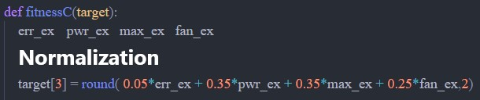
getNG(目標 ,欄位 ,幾個):取得Array某column值最大的index array, N個
getNGS(目標 ,欄位 ,幾個): 取得Array某column值最小的index array, N個
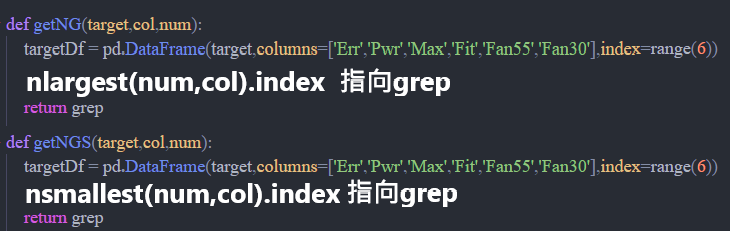
reProduction(母 ,母適性 ,子 ,子適性 ,被取代Index ,哪個子): 子代取代母代
mutation(母 ,突變的Index ,哪段 ,怎麼變 ,突變機率): 依result某值做突變
runResult(目標 ,目標適性): 將PID丟入OS得到result，並將result存入Array
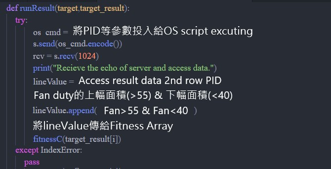
調參的迴圈
挑選邏輯 ←→ 交配邏輯 ←→ Fitness權重 ←→ 數據正規化
呈現對照
12分鐘的 loading，每2分鐘變化： 75 、 88 、 24 、 96 、67 、 55
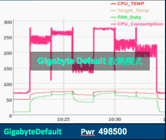
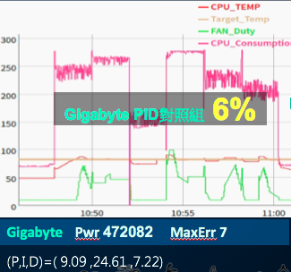
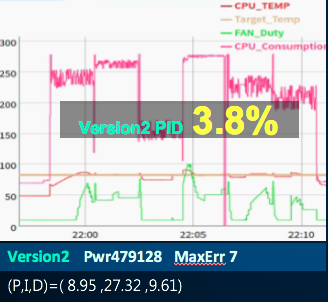
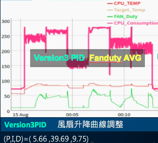
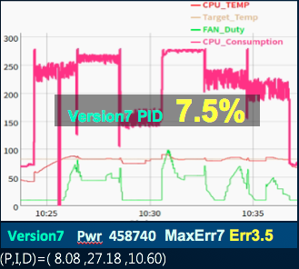
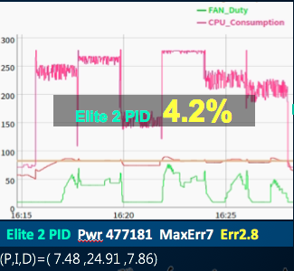
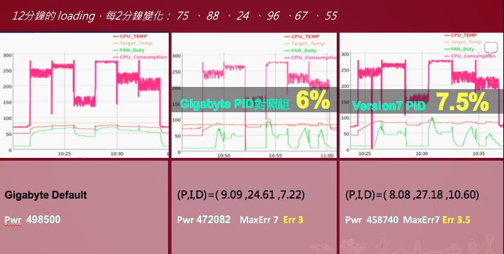
實作歷程
這次專題，為技嘉將遇到的企業痛點，讓我們實際參與操作。期望我們能夠，
可以有所突破以及貢獻。除了題目上的挑戰外，因為疫情關係，我們同時也面對著遠端合作的練習。
起初，聽完技嘉方的需求提出時，我們尚未太了解其中內容。只知道要找值，然後可以達到調整電力以及風扇。由於我們都沒有機械相關背景，
在初期，找起資料上遇見滿多貧頸，難以辨別什麼是有用的資料文獻。經過多次討論，以及老師課堂的討論下，慢慢的有初步的了解。也在討論中，意外想到日本的工業很強，是否他們可能擁有同樣的痛點？因此得到不少資訊。
（時間剩下四週要發表）
但時間的有限，老師的方向也有些模糊，因此我們決定依循技嘉的腳步，先執行GA去了解到底系統的運作。如果需要調整在做出其他調整。比起中套件，我們傾向於自己撰寫，因為考慮到套件的適用性問題。經過努力不懈下，寫出了第一版的程式碼，卻無法跑。大家連上線，一起debug。用短時間去試跑，終於成功跑動。因此我們思考的如果原本為6分鐘，我們改用3分鐘，是不是可能節省時間，並且可以增加迭代次數。同時依據結果不斷的調整參數，期望可以跑出更加理想的值。
同時間，我們也討論一部分的人去架設網站，因為報告時間30分鐘，能說明有限，可以讓有興趣的聽眾更加了解內容，也期望我們研究的文獻，可以對於未來技嘉工程師有所幫助。
（時間剩下三週）
我們的程式已經調整到相對滿意的狀況，希望藉由多次抓取可以得到好的結果。但意外技嘉遇到駭客事件，因此我們少了四天時間，可以跑。讓我們不禁有些緊張，會不會跑得值不夠理想。
（時間剩下兩週）
程式方面大概到一段落，我們面對的是彩排，必須準備報告的內容。此時，得知技嘉的設備，將轉移到資策會這邊。沒有時間去試不同的方法，但仍然擔心環境的改變，對於我們的設定上有所改變，因此我們也試跑了許多次，數值上有點差異，但趨向於好的走，因此對於我們的優化GA，我們更有信心。在準備報告上，我們也遇到了，到底怎麼說，可以讓聽眾可以有概念理解。
（最後一週）
我們不斷的修改希望可以達到更好的呈現。
總結與展望
關關難過關關過，我們盡我們所能，努力達到目標，試圖解決技嘉的痛點。
從一開始的方向到底怎麼做，到後來慢慢找出可行性。
一路上，我們從一開始僅上課過一個月，但並非熟悉狀態下被選定一組，透過遠端方式做這個專案，在推進進度以及管理上，遇過許多麻煩。
後來的遇到駭客事件的意外，也讓我們覺得害怕無法預期完成。還有突然得知的機器環境移動，卻意外成為我們對我們的演算法更有信心的根源。
還有我們在中間，其實也一直在質疑，做GA是否是正確的方向？我們能做出來嗎？
然後意外看到圖下的文獻，讓我們更有信心完成。
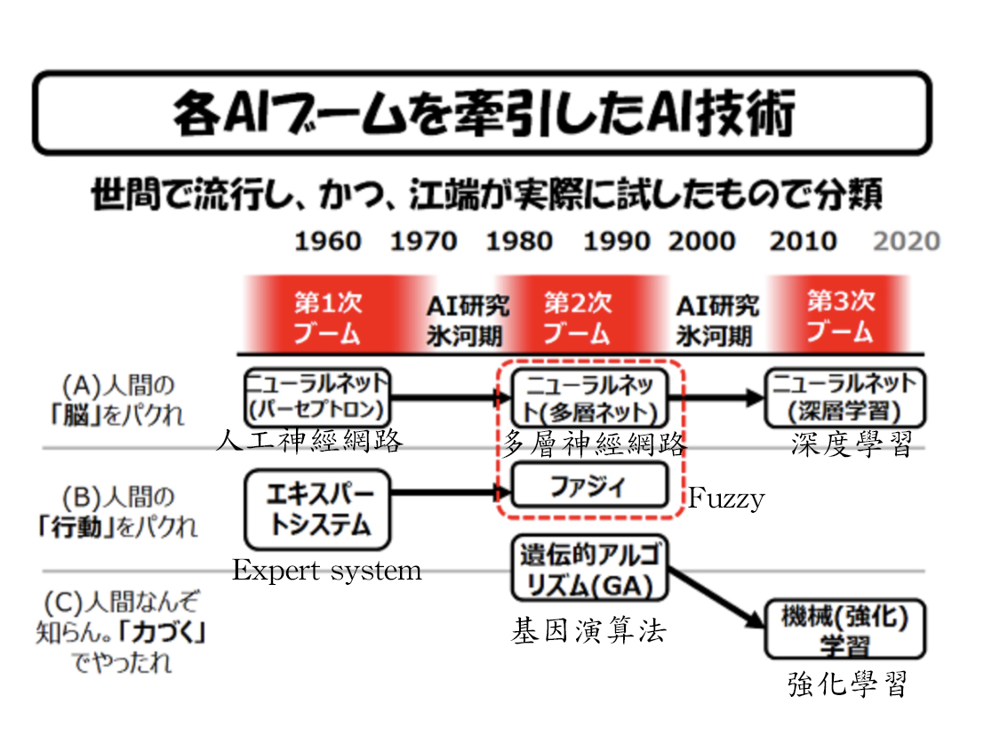
以未來性，可將我們所做的優化GA轉換到強化學習上面。讓它可以達到自動選參的目標。
最後，我們很榮幸有機會與技嘉合作，深深的感謝，副理以及林工程師的幫助，還有智慧電子學院以及資策會給予的資源。